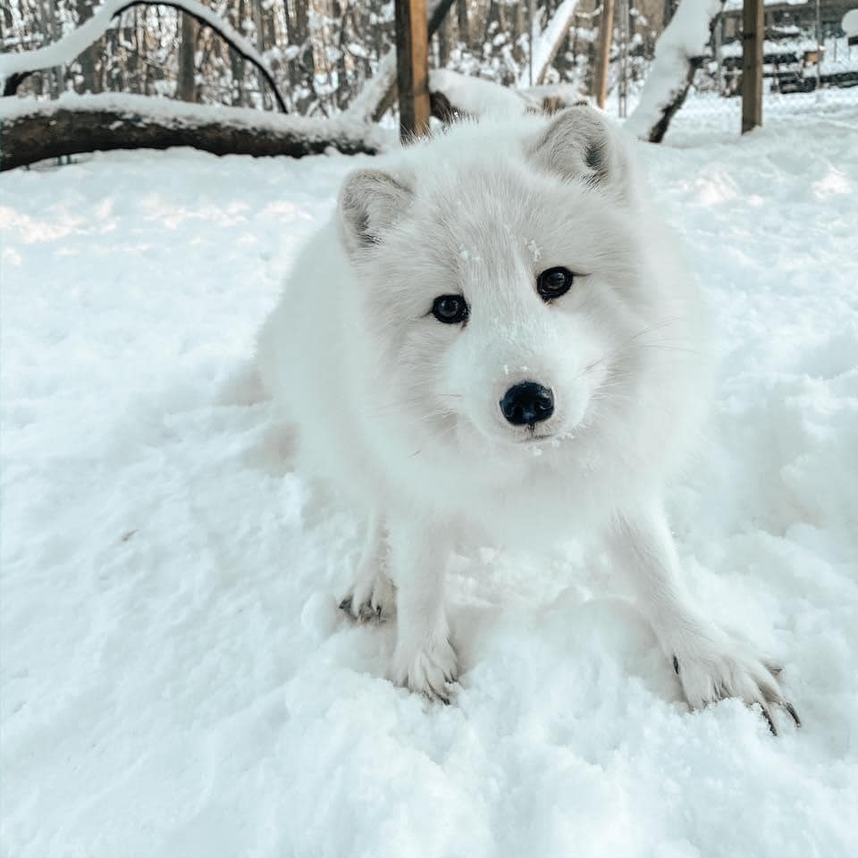

Have you found an orphaned or injured wild animal that needs help?
In this situation, you need to locate the closest state-licensed wildlife rehabilitator near you who works with the species.
Personally, I rehabilitate our New York-native predator-type mammals (foxes, minks, weasels). Please note that I CANNOT always intake an animal, as I am a one-man show with wildlife rehab, and I have capacity limitations.
The Animal Help Now website (linked there in the text) has been a GREAT resource for helping connect the public and rehabbers. I really like this tool, as it tends to have the most up to date information of any wildlife help search engine I know of.
How the AHN site works: You type in your address, and it will populate a list of rehabbers based on that location, and within that search result, it should state which species(s) each rehabber works with. It is important to note that not all wildlife rehabilitators work with—or are licensed for—all native species.
In the meantime, if safely possible, keep the animal contained in a quiet, safe dark area with as little stimulation and human/pet traffic as possible and do not handle it.
I do not recommend attempting to feed wildlife you find until they get to a rehabber, as it can sometimes do more harm than good if the animal is not yet stabilized
and hydrated.
Do you need help with a captive-bred exotic?
 Need placement for a captive-born fox, wolfdog, or other exotic pet or rescue? Since these animals are born in captivity, this means that they must stay in captivity, as it is both illegal and immoral to release a captive-bred wild animal. Please feel free to send me a detailed email if you need assistance. Include the species, age, vet history (if any), temperament, any important details or quirks, and photos of the animal.
Need placement for a captive-born fox, wolfdog, or other exotic pet or rescue? Since these animals are born in captivity, this means that they must stay in captivity, as it is both illegal and immoral to release a captive-bred wild animal. Please feel free to send me a detailed email if you need assistance. Include the species, age, vet history (if any), temperament, any important details or quirks, and photos of the animal.
Please note that depending on the species of animal and my capacity limitations, I cannot guarantee that I can intake your animal.
Note for Wolfdog/Wolf Hybrid Placement:
Like fox sanctuaries, many Wolfdog sanctuaries are always running at full capacity. For this reason, as cliché as it may sound, I STRONGLY suggest making a post on the Wolfdog rehoming groups you can find on Facebook. You'll have to request to join these groups (there are a couple) prior to posting. IF there is a facility or qualified home that is looking for a specific temperament, gender, content %, etc., I guarantee they will be keeping their eyes on these Facebook group postings. You will have to use your own discretion when it comes to vetting potential homes.
All of our non-releasable permanent residents were either born in captivity—not taken from the wild—or have a permanent disability that would prevent them from surviving and thriving in the wild. We love sharing a look into the behaviors and lives of these beautiful animals, enjoy helping people learn about the realities of exotic pet ownership (foxes really don't make good pets), and enjoy furthering conservation efforts through education.
Email Arctic Fox Daily